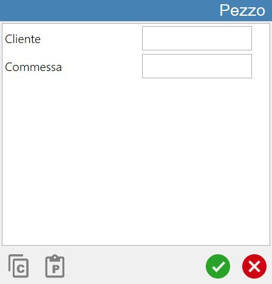
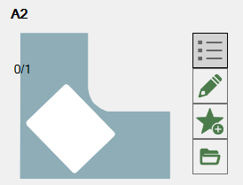
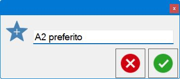
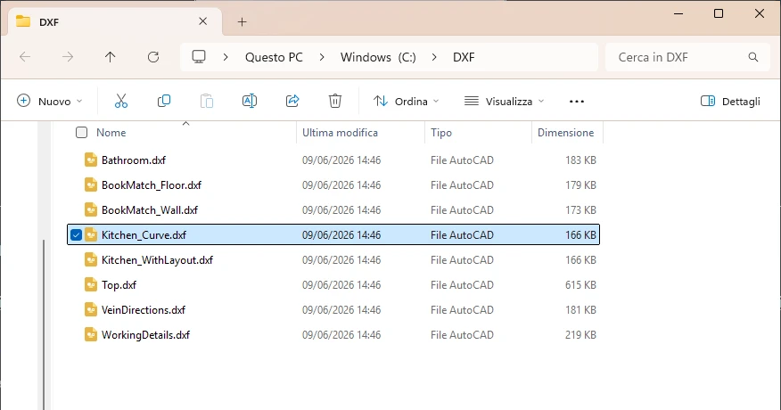

Parametrix is designed for machining flat, closed geometric figures representing pieces.

Piece creation mode
As can be seen from the top navigation bar,

pieces can be created using one of the following modes:
DXF file import | |
 | Create rectangles |
 | Create parametric figures |
 | CSV file import |
 | History |
 | Favorites |
 | Create commercial pieces |
A more detailed description of how each mode works is provided in the corresponding paragraph of this chapter.
The selected function is highlighted in light green. When the “Create Pieces” panel is opened, “Create rectangles” mode is selected.
Import pieces into Parametrix
To complete creation of one or more pieces correctly, use the following button, which is available in every section of the panel:
 | Import pieces |
Operation of the piece list, located on the right side of the panel, is explained in the corresponding chapter.
The following image shows how, after pressing the “Import pieces” button, the piece list has been populated with the elements making up the DXF file selected for import.

Imported piece list
The piece list displayed on the right side of the “Create Pieces” panel is initially empty. It is populated as pieces are created using the functions described earlier in this chapter.
An example of an empty piece list (left) and a populated list (right) is shown below:
 |  |
Advanced piece properties
The previous example images show a single button in the top-right corner of the list of pieces to be machined:
 | Show advanced Piece information |
|---|

At the bottom of the Piece window are two buttons described below:
 | Copy |
 | Paste |
Display piece details
Using the populated list on the right shown at the beginning of the chapter as an example, the behaviour of the following button is now highlighted:
 | Show piece details |
After pressing the button, the piece in the list appears as follows:

Add the selected piece to favourites
Any piece can be added to the dedicated favourite pieces section using the following button:
 | Add favourite |
Pressing this button displays the following pop-up:

Completing the text field and then confirming allows the operator to add the selected piece to the favourite pieces list described previously.

Find source DXF
The source DXF folder can be located using the following button:
 | Find Piece |
When this button is pressed, if Parametrix correctly locates the source DXF file, a File Explorer window similar to the following opens:
